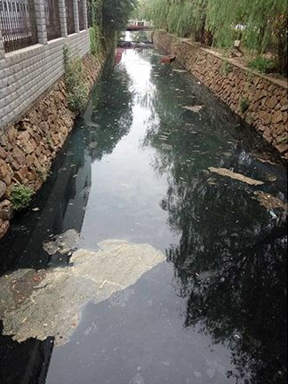

2018年04月03日 星期二
治理情况
当年
安全类
| 烟感 |
| 1000个 |
| 设备正常率 |
| 98% |
| 人脸识别 |
| 1000个 |
| 设备正常率 |
| 98% |
| 井盖 |
| 1000个 |
| 设备正常率 |
| 98% |
| 消防栓 |
| 1000个 |
| 设备正常率 |
| 98% |
| 高空摄像头 |
| 1000个 |
| 设备正常率 |
| 98% |
| 灭弧监测 |
| 1000个 |
| 设备正常率 |
| 98% |
| 地磁 |
| 1000个 |
| 设备正常率 |
| 98% |
| 红外探测器 |
| 1000个 |
| 设备正常率 |
| 98% |
消防地磁设备8:34:01发生了第2次告警，持续30分钟
| 上报时间：2018/04/11 08:16 |
| 事件位置：小区15号楼消防通道 |
| 事件类型：消防占道 |
| 处理状态：待人工处理 |
摄像头捕获30分钟内23号单元楼15层发生2次高空抛物
| 上报时间：2018/04/11 8:30 |
| 事件位置：23号单元楼15层 |
| 事件类型：高空抛物 |
| 处理状态：人工处理中 |
1小时内摄像头捕捉1人多次在小区各单元楼出现并逗留
| 上报时间：2018/04/11 8:32 |
| 事件位置：全小区 |
| 事件类型：可疑人员追踪 |
| 处理状态：处理完成 |
80%
重大安全事件


| 上线前 | 上线后 |
决策分析
2018年安全问题占比
2018年安全问题分析
主要类型
高空抛物
门禁开启
消防占道
主要发生时段
| 晚上22:00至凌晨2:00 |
| 中午12:00至14:00 |
问题原因分析
措施与机制
绩效评价
| 责任单位 | 收到事件数 | 办结事件数 | 平均处理时长 | 事件办结率 |
| 物业 | 100 | 100 | 100 | 99.5% |
| 物联网设备商 | 305 | 305 | 305 | 98% |
| 第三方厂商 | 78 | 78 | 78 | 98% |
| 居委 | 132 | 132 | 132 | 98.56% |
设备故障分析
| 责任单位 | 收到事件 | 办结事件 | 平均处理时长 | 事件办结率 |
| XX科技 | 100 | 99 | 20分钟 | 99% |
| XX科技 | 100 | 99 | 20分钟 | 99% |
| XX科技 | 100 | 99 | 20分钟 | 99% |
| XX科技 | 100 | 99 | 20分钟 | 99% |
| XX科技 | 100 | 99 | 20分钟 | 99% |
| XX科技 | 100 | 99 | 20分钟 | 99% |
| XX科技 | 100 | 99 | 20分钟 | 99% |
| XX科技 | 100 | 99 | 20分钟 | 99% |
| XX科技 | 100 | 99 | 20分钟 | 99% |
| XX科技 | 100 | 99 | 20分钟 | 99% |
| XX科技 | 100 | 99 | 20分钟 | 99% |
| XX科技 | 100 | 99 | 20分钟 | 99% |
| XX科技 | 100 | 99 | 20分钟 | 99% |